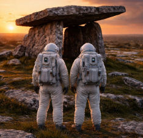

Dolmen Restorers from the Future
Travelling through time and space.
|
 Recent RestorationThis dolmen, which had been misaligned, with a Golf Course positioned over it's power grid, was malfunctioning. The dolmen restorers restructured it within the grid, realigning it and testing it's function using the control panel. To avoid temporal interference the Dolmen restorers used the dolmen's trans-mat system to quickly remove themselves to their own continuum. As you can see, the dolmen is now functioning and has sucessfully been restored and aligned. |
|---|
| Webdesign©blurry-vision-design |
|---|